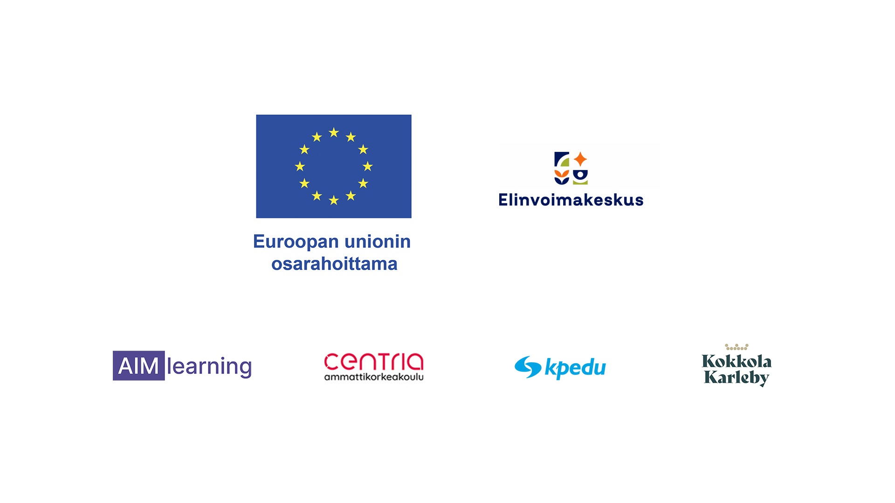

Valitse kieli / Choose language
Valitse kyselyn tyyppi / Select survey type
Tämä kysely on toteutettu Euroopan unionin osarahoittamassa AIMlearning-hankkeessa. This survey has been implemented in the EU co-funded AIMlearning project.